Highlighted author(s): Helmut Ritsch
Authors: Johannes Kerber, Christoph Hotter, Helmut Ritsch, Klaus Mølmer
Type: theory · Category: other · PDF: https://arxiv.org/pdf/2608.28470v1
Analysis basis: full PDF text, analyzed in chunks
Topic relevance: free-space correlated emission 3/5 · Keldysh / 2PI / non-Gaussian methods 2/5 · analog quantum simulation 2/5 · methods for driven-dissipative 2/5 · Tavis-Cummings & cavity-many-emitter 1/5 · correlated / nonlocal dissipation 1/5 · driven-dissipative phase transition 1/5 · interference shaping light 1/5 · quantum measurements 1/5 · quantum optics experiment 1/5
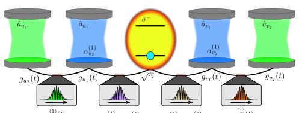
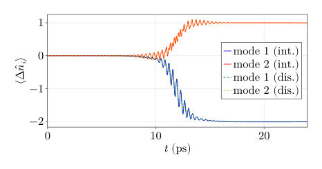
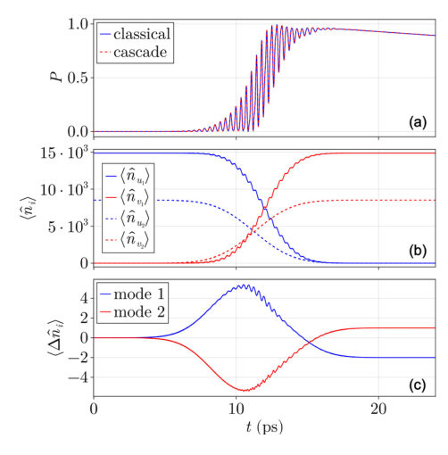
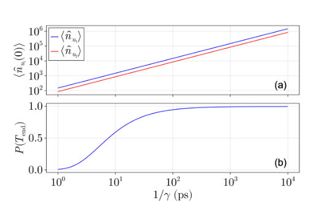
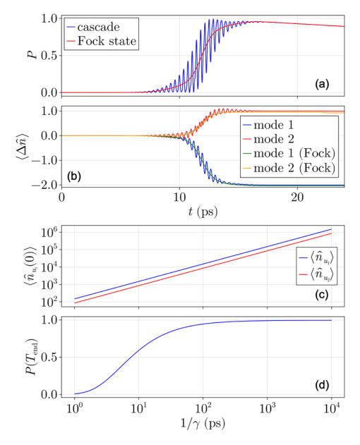
Summary. This theoretical paper investigates the quantum dynamics of the SUPER excitation scheme in a quantum dot driven by two pulsed lasers. By employing a full quantum input-output formalism and cumulant expansion, the authors confirm the mechanism's inherent multi-photon nature in free space. The results are crucial for understanding high-fidelity quantum control in open quantum systems.
Why it may be interesting. This work provides a rigorous quantum electrodynamics treatment of coherent light-matter interaction in the weak coupling regime, extending standard cavity QED models to free-space pulsed excitation using advanced input-output formalisms.
Main problem. The paper analyzes the counterintuitive dynamics of the Swing-UP of the quantum Emitter population (SUPER) two-color pulsed excitation scheme.
Main result. The free-space realization confirms the underlying nonlinear three-photon Raman-type character of the SUPER mechanism, requiring high photon numbers for high-fidelity inversion, contrasting with cavity-enhanced models.
Method. The analysis employs a full quantum input-output description, extending the formalism with a cumulant expansion approach to handle large coherent-state amplitudes.
Model / system. The system involves a two-level quantum emitter (TLS) driven by two time-overlapping, far off-resonant red detuned Gaussian pulses, modeled using the SLH formalism and cascade product rules.
Key observables. TLS population inversion ($P$), photon loss/gain ($\langle\Delta\hat{n} angle$), and mean photon numbers ($\langle\hat{n}_i angle$).
Important parameters / regimes. Red detuning (several meV below resonance), pulse photon numbers (requiring values much larger than one for free space).
Assumptions / limitations. The formalism assumes the ability to model the pulse dynamics via virtual input/output cavities and utilizes cumulant expansion for large coherent amplitudes.
Figures summary. Figures illustrate the cascade setup, the population dynamics ($P$) for both two-pulse and single-pulse descriptions, and the resulting photon loss/gain signatures, confirming the $(-2, +1)$ exchange.
Paper structure. The paper builds from a classical reference model to a full quantum input-output description, detailing the cascade Hamiltonian, applying the cumulant expansion in the interaction picture, and comparing results across different pulse representations (two-pulse vs. single-pulse).
The Swing-UP of the quantum EmitteR population (SUPER) two-color pulsed excitation scheme allows for robust and close to 100\% excitation of a two-level quantum emitter using only red detuned light. We analyze the underlying counterintuitive dynamics using a full quantum input-output description of the in- and outgoing light pulses for the case of two coherent free-space input pulses at realistic photon numbers. At the microscopic level, the SUPER mechanism exhibits its nonlinear three-photon Raman-type character, leading to a net photon-number change of $-2$ in one mode and $+1$ in the other, as was first guessed from cavity-enhanced model descriptions at low photon numbers. We confirm that in free space, a sufficiently high pulse photon number, much larger than one, is required to achieve high-fidelity inversion. To treat the large coherent-state amplitudes (photon numbers) relevant for SUPER, we extend the quantum input-output formalism to include a cumulant expansion approach. With an interaction-picture formulation, the few exchanged photons that govern the nontrivial dynamics enable direct full-quantum calculations in truncated Hilbert spaces, including treatments in a displacement frame and for initial Fock-state pulses.
Highlighted author(s): Sarang Gopalakrishnan
Authors: Hossein Dehghani, Sarang Gopalakrishnan, Michael Gullans
Type: theory · Category: quantum information and computing · PDF: https://arxiv.org/pdf/2608.27740v1
Analysis basis: full PDF text, analyzed in chunks
Topic relevance: analog quantum simulation 2/5 · methods for driven-dissipative 2/5 · quantum measurements 2/5
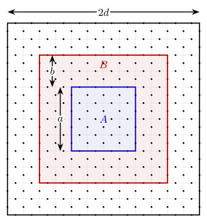
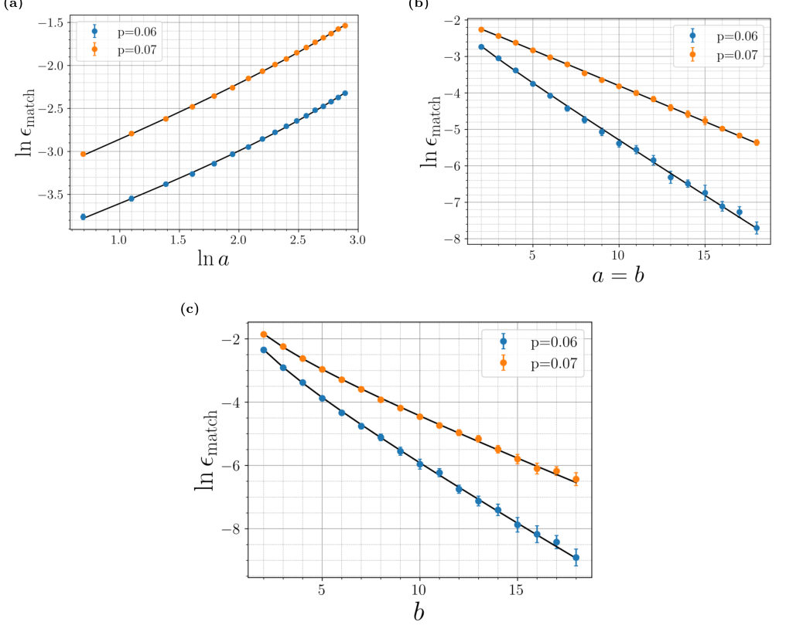
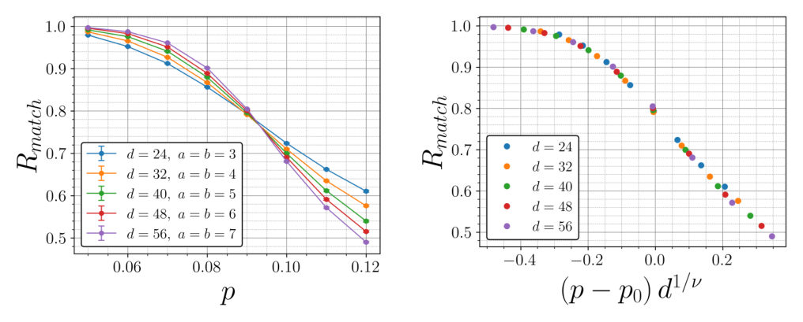
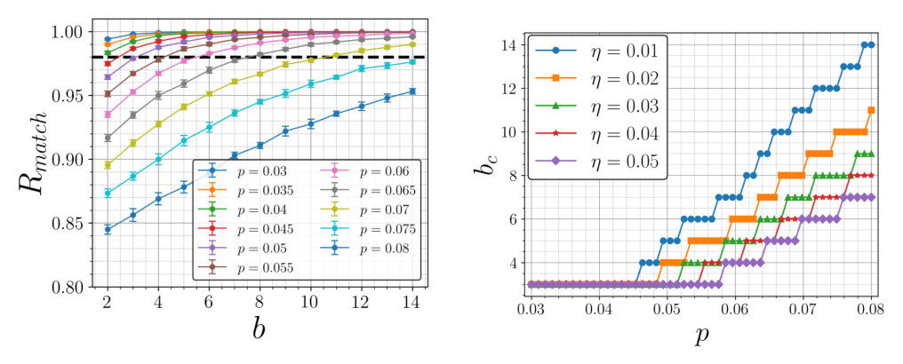
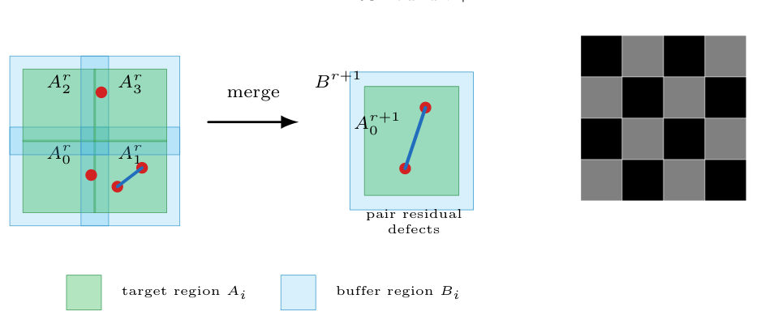
Summary. This paper tackles the scalability challenge in topological quantum error correction by introducing a 'matching ratio' diagnostic to quantify local recoverability. This diagnostic is used to build a composite, quasi-local Renormalization Group decoder for the Toric Code. The resulting decoder exhibits threshold behavior, suggesting a viable path toward fault-tolerant quantum computation that balances accuracy and computational cost.
Why it may be interesting. The work provides a concrete, theoretically motivated, and computationally structured approach to designing fault-tolerant quantum computation protocols by bridging the gap between idealized global theory and practical local computation.
Main problem. The paper addresses the fundamental trade-off in topological quantum error correction between achieving global accuracy near the threshold and maintaining the computational locality required for scalable, practical decoders.
Main result. By developing an adaptive, composite quasi-local decoder based on a matching ratio diagnostic, the authors demonstrate a threshold-like logical-failure behavior that appears at a lower error rate than conventional global decoders.
Method. The core method involves defining a 'matching ratio' ($R_{ ext{match}}$) comparing local decoding results to global ones, which is then used to formulate an adaptive, multi-scale Renormalization Group (RG) decoder structure.
Model / system. The study analyzes the dephased Toric Code, which is a model for topological quantum memory, using syndrome measurements under dephasing noise.
Key observables. Matching ratio ($R_{ ext{match}}$), mismatch ($\epsilon_{ ext{match}}$), and the logical-failure curve crossing point ($p_{ ext{comp}} imes$).
Important parameters / regimes. Error rate ($p$), target region size ($a$), buffer width ($b$), and code distance ($d$).
Assumptions / limitations. The analysis focuses specifically on dephasing noise with perfect syndrome measurements, and the matching ratio uses literal Pauli-string equality.
Figures summary. Figures illustrate the geometry of the local/buffer regions, show the scaling collapse of $R_{ ext{match}}$ for specific geometries, and display the final logical-failure curves for the composite decoder.
Paper structure. The paper first introduces the local-global trade-off, develops the matching ratio diagnostic, uses this to derive scaling laws, and finally implements and analyzes a composite, quasi-local RG decoder structure.
Topological quantum memories need decoders that are both reliable and scalable, but these goals compete: globally informed decoders are accurate near threshold yet expensive, while strictly local rules are fast but can miss long-range structure. Motivated by recent recoverability and mixed-state viewpoints, we make this tradeoff operational for the dephased toric code through a decoder-level local recoverability diagnostic. We compare global MWPM corrections to quasi-local corrections inside a target region and define a matching ratio $R_{\mathrm{match}}$, with mismatch $ε_{\mathrm{match}}=1-R_{\mathrm{match}}$. Across geometry families, $ε_{\mathrm{match}}$ shows strong buffer-controlled suppression and is well organized by a two-geometry scaling form. For scaled families, especially $a=b=d/8$, $R_{\mathrm{match}}$ exhibits a clear crossing and finite-size collapse near $p\!\sim\!0.09$, consistent with a growing recoverability scale near the decoding transition. We use this scaling to formulate an adaptive buffer-selection rule and to identify a distance-scaled initialization for a composite quasi-local RG decoder on the full torus. In the tuned family $a_0=b_0=d/8$, the resulting logical-failure curves show an apparent finite-size crossing at $p\simeq0.09$--$0.10$, below the conventional MWPM threshold scale. We focus on dephasing noise with perfect syndrome measurements to cleanly isolate the underlying behavior.
Highlighted author(s): Andrew Lucas
Authors: Akshay Pal, Andrew Lucas, Umang Mehta
Type: theory · Category: strongly correlated electrons · PDF: https://arxiv.org/pdf/2608.28588v1
Analysis basis: full PDF text, analyzed in chunks
Topic relevance: Keldysh / 2PI / non-Gaussian methods 2/5 · analog quantum simulation 1/5
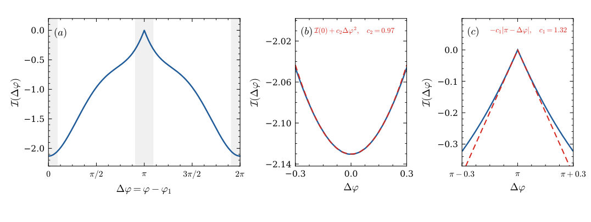
Summary. This theoretical paper examines how interactions modify the topological information contained in density three-point correlations in 2D Fermi liquids. Using the coadjoint-orbit effective field theory, the authors calculate interaction corrections, finding a new nonanalytic structure dependent on the band curvature. This shows that interaction effects can fundamentally alter the way the system's topology is probed by these correlation functions.
Why it may be interesting. While focused on Fermi liquids, the use of advanced effective field theories (coadjoint orbits) to probe subtle nonanalytic behavior in correlation functions is a powerful theoretical tool applicable to understanding quantum critical points and interacting many-body systems in general.
Main problem. The study investigates how electron-electron interactions modify the topological information encoded in density three-point correlation functions within two-dimensional Fermi liquids.
Main result. Interaction effects introduce a novel nonanalytic contribution to the density three-point function, proportional to the band curvature $\epsilon''(\mathbf{p}_F)$, demonstrating that topology-detecting correlations are sensitive to interaction details beyond simple renormalization.
Method. The authors employ the coadjoint-orbit effective field theory to systematically calculate perturbative corrections to the density correlation function, analyzing specific momentum limits to pinpoint nonanalytic behavior.
Model / system. The system is a two-dimensional Fermi liquid. The analysis compares the behavior of density correlations in the noninteracting limit, the Luttinger liquid (1D), and the interacting 2D case, using the coadjoint-orbit formalism for the latter.
Key observables. The equal-time density three-point correlation function, $\langle\delta ho_{\mathbf{k}} \delta ho_{\mathbf{k}_1} \delta ho_{\mathbf{k}_2} angle$, and its nonanalytic structure near specific momentum configurations.
Important parameters / regimes. The band curvature $\epsilon''(\mathbf{p}_F)$ and the generalized Landau interaction parameters $F^{(2,0)}$.
Assumptions / limitations. The calculations rely on the coadjoint-orbit effective field theory framework and assume angle-independent Landau parameters for explicit limit calculations.
Figures summary. The notes reference a figure showing numerical confirmation of a distinct linear cusp in the correlation function near the antiparallel momentum configuration ($\Delta\varphi o \pi$).
Paper structure. The paper develops the theory by first establishing the noninteracting baseline, then applying the coadjoint-orbit formalism to calculate interaction corrections to the three-point function, analyzing the resulting nonanalytic behavior in specific momentum limits.
Density three-point correlations are known to probe the topology of the Fermi sea in two-dimensional noninteracting systems. Here, we study how these correlations are modified by interactions using the coadjoint-orbit effective field theory. A key advantage of the coadjoint-orbit formulation is that it provides a systematic way to incorporate generalized Landau interactions in terms of bosonized degrees of freedom, mapping fermionic loop contributions onto simpler tree-level diagrams. We show that, for a general isotropic dispersion $ε(p)$, even at linear order in the generalized Landau interaction, $\mathcal{O}(\mathcal{F}^{(2,0)})$, there exists a contribution proportional to the band curvature $ε''(p_F)$ that changes the nonanalytic structure of the free density three-point correlation function. This contribution introduces a distinct nonanalytic structure beyond that found in either the noninteracting case or an interacting Galilean-invariant system, showing that interaction effects can modify the topology-detecting density three-point correlation.
Authors: Joseph Huang, Yi Yang
Type: theory · Category: other · PDF: https://arxiv.org/pdf/2608.28126v1
Analysis basis: full PDF text, analyzed in chunks
Topic relevance: 🔥 driven-dissipative phase transition 5/5 · analog quantum simulation 3/5 · correlated / nonlocal dissipation 3/5 · methods for driven-dissipative 3/5 · non-equilibrium universality 3/5 · Keldysh / 2PI / non-Gaussian methods 2/5 · Frenkel-Kontorova 1/5 · Tavis-Cummings & cavity-many-emitter 1/5 · quantum measurements 1/5
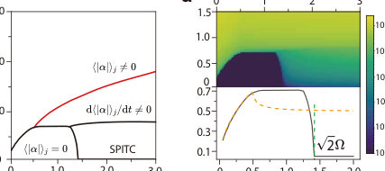
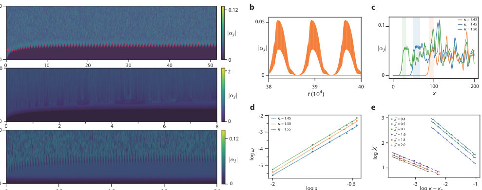
Summary. This paper theoretically establishes the existence of a Self-partitioned Interfacial Time Crystal (SPITC) in a nonreciprocal quantum system. By analyzing the Rabi-Hatano-Nelson model, the authors show that the system spontaneously generates an internal interface where time-translation symmetry is broken. The work derives specific scaling laws for this novel spatiotemporal order, providing a route to understanding boundary dynamics in open quantum systems.
Why it may be interesting. This work provides a detailed theoretical framework for realizing spatiotemporal order in open, non-Hermitian quantum systems, which is highly relevant to cavity QED and driven quantum optics.
Main problem. The paper investigates whether a homogeneous, open many-body system can spontaneously develop both spatial and temporal order simultaneously, leading to a Self-partitioned Interfacial Time Crystal (SPITC).
Main result. The existence of the SPITC phase is demonstrated, which is intrinsically driven by nonreciprocity and open boundary conditions, leading to unique scaling laws for its frequency and boundary position.
Method. The analysis uses mean-field theory, linearizing equations of motion via the Bogoliubov de-Gennes (BdG) Hamiltonian, and performing secular approximations to derive effective spin dynamics.
Model / system. The system is modeled using a dissipative, nonreciprocal extension of the Rabi-Hatano-Nelson model, involving coupled bosonic chains and two-level spin systems, governed by a Lindblad master equation.
Key observables. SPITC frequency ($\omega_{ ext{SPITC}}$), front position ($X$), and the growth rate of the system's stability ($ ext{Re}d$).
Important parameters / regimes. Nonreciprocity parameter ($\kappa$), spin-photon coupling strength ($g$), and the ratio of coupling to hopping ($J/\Omega$).
Assumptions / limitations. The analysis relies on mean-field approximations and the separation of time scales, treating the slow envelope dynamics separately from fast spin precession.
Figures summary. Figures illustrate phase diagrams (PBC and OBC) showing transitions between vacuum, superradiant, and SPITC phases, and the scaling of the boundary position $X$ with nonreciprocity.
Paper structure. The paper progresses from establishing the general model and the concept of SPITC, to deriving the effective spin dynamics by integrating out the photon field, and finally analyzing the stability and scaling laws of the resulting interfacial order.
Nonequilibrium many-body systems can spontaneously break symmetry in time, as in time crystals, or in space, through self-organized domains and interfaces. Whether these two forms of symmetry breaking can intertwine so that an emergent interface alone hosts time-crystalline order remains unknown. In this work, by introducing the Rabi-Hatano-Nelson model, we unveil the existence and mechanism of a self-partitioned interfacial time crystal (SPITC), where a homogeneous system generates its own internal and tunable interface, at which the time-translation symmetry is also spontaneously broken. Such a SPITC phase is intrinsically induced by nonreciprocity and open boundary conditions, without external pumping or long-range interaction. The periodic and open boundary phase diagrams of the system are both mapped out; vacuum and Dicke-like superradiance with static or active orders are identified, with analytical phase boundaries in the weak coupling limit. The frequency of the SPITC is found to scale quadratically with the spin-photon coupling strength, as we derive analytically for the slow dynamics of the spins. The position of the SPITC boundary scales with a critical exponent of $-1$ as a function of the degree of nonreciprocity, in stark contrast to $-1/2$ for an otherwise stationary boundary. Our construction of SPITC establishes a route to spatiotemporal order in non-Hermitian many-body systems.
Authors: Nozhat Ghaseminezhad, Vahid Ameri, Alidad Askari
Type: theory · Category: other · PDF: https://arxiv.org/pdf/2608.28251v1
Analysis basis: full PDF text, analyzed in chunks
Topic relevance: 🔥 correlated / nonlocal dissipation 4/5 · Tavis-Cummings & cavity-many-emitter 3/5 · analog quantum simulation 3/5 · driven-dissipative phase transition 3/5 · methods for driven-dissipative 3/5 · non-equilibrium universality 2/5 · Keldysh / 2PI / non-Gaussian methods 1/5 · quantum measurements 1/5
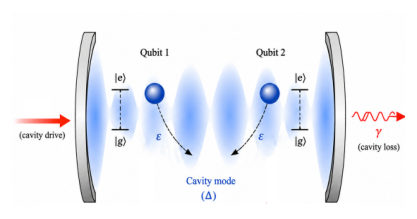
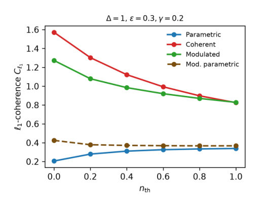
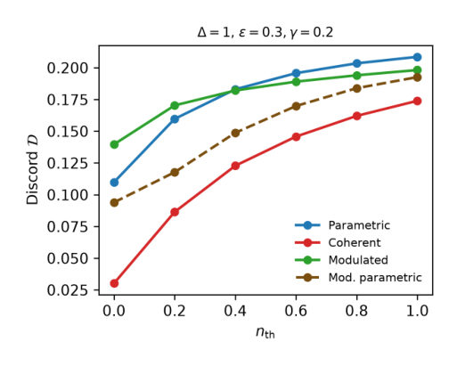
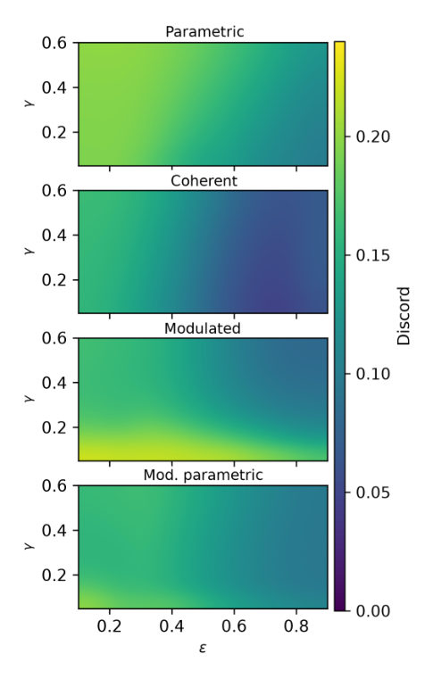
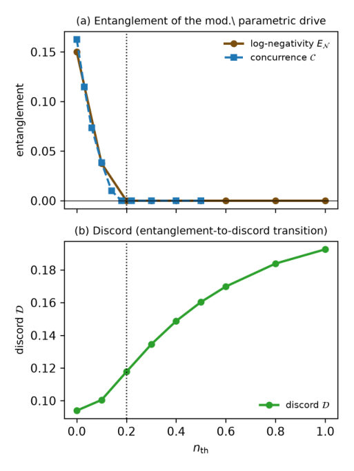
Summary. This paper investigates how driving a shared dissipative cavity mediates correlations between two qubits. It finds that while static drives only generate quantum discord, a time-modulated parametric drive can generate genuine entanglement at low temperatures. Crucially, increasing thermal noise causes the system to undergo a transition from entanglement to a state characterized only by discord.
Why it may be interesting. This work is highly relevant to AMO physics and open quantum systems, as it models how engineered dissipation and driving fields can be used to control the transition between different types of quantum correlations (entanglement to discord) in cavity QED setups.
Main problem. To determine how the specific driving mechanism applied to a shared dissipative cavity controls the nature and magnitude of quantum correlations (discord vs. entanglement) between two coupled qubits.
Main result. The time-modulated parametric drive is uniquely capable of generating genuine two-qubit entanglement at low temperatures, which subsequently decays into a state exhibiting only quantum discord as temperature increases.
Method. The study employs numerical simulation of the master equation, often utilizing an adiabatic elimination technique to derive an effective two-qubit model.
Model / system. The system consists of two qubits coupled solely through a single, shared, damped, and driven optical cavity mode. The dynamics are governed by the master equation incorporating dissipation and various driving Hamiltonians.
Key observables. Quantum Discord, Entanglement (Logarithmic Negativity, Concurrence), and single-qubit coherence ($\ell_1$-norm).
Important parameters / regimes. Cavity temperature ($n_{ ext{th}}$), coupling strength ($\epsilon$), and damping rate ($\gamma$).
Assumptions / limitations. The analysis relies on the adiabatic elimination of the cavity mode to derive an effective two-qubit Hamiltonian and dissipation channel.
Figures summary. Figures illustrate the growth of quantum discord with increasing temperature for various drives, and specifically show the entanglement-to-discord transition curve for the time-modulated parametric drive.
Paper structure. The paper systematically compares four different driving schemes (Parametric, Coherent, Modulated, Time-modulated Parametric) by analyzing the steady-state values of discord and entanglement as a function of temperature and coupling parameters.
Using a numerically exact master equation, we demonstrate that two qubits, coupled solely through a shared damped, driven cavity, can become correlated. The drive influences both the amount and the type of correlation. For parametric, coherent, and resonantly modulated drives, the qubits develop quantum discord that increases with cavity temperature, while the logarithmic negativity remains numerically zero. This indicates the presence of discord without entanglement. In contrast, a time-modulated parametric drive is the only one that generates genuine two-qubit entanglement, achieving \(E_\mathcal{N} \simeq 0.15\) and concurrence \(\simeq 0.16\) at \((\eps, γ) = (0.3, 0.2)\), which rises to \(E_\mathcal{N} \simeq 0.32\) in the weak-coupling, moderate-damping region. Heating eventually destroys this entanglement around \(n_{\mathrm{th}} \simeq 0.2\), while discord continues to grow, resulting in a temperature-driven transition from entanglement to discord within a single drive. Moreover, the parametric drive offers the best protection for single-qubit coherence, unlike the coherent and modulated drives. An adiabatic-elimination model indicates that the cavity generates an effective coupling and a collective dephasing channel, both of which increase with temperature, explaining the observed discord without entanglement.
Authors: Zeno Bacciconi, Martina Frau, Luca Tagliacozzo, Michele Caselle, Marcello Dalmonte
Type: theory · Category: statistical mechanics · PDF: https://arxiv.org/pdf/2608.27561v1
Analysis basis: full PDF text, analyzed in chunks
Topic relevance: 🔥 methods for driven-dissipative 4/5 · 🔥 scars & prethermalization 4/5 · driven-dissipative phase transition 3/5 · non-equilibrium universality 3/5 · Keldysh / 2PI / non-Gaussian methods 2/5 · analog quantum simulation 2/5
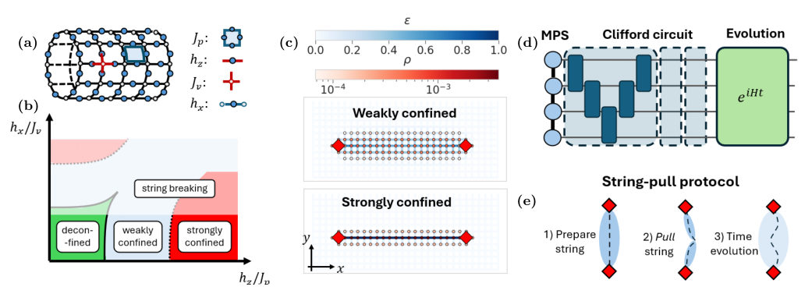
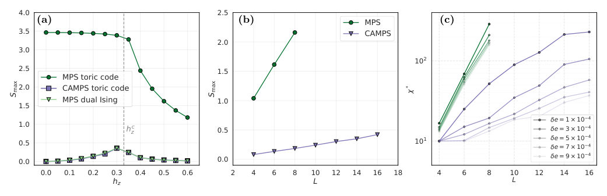
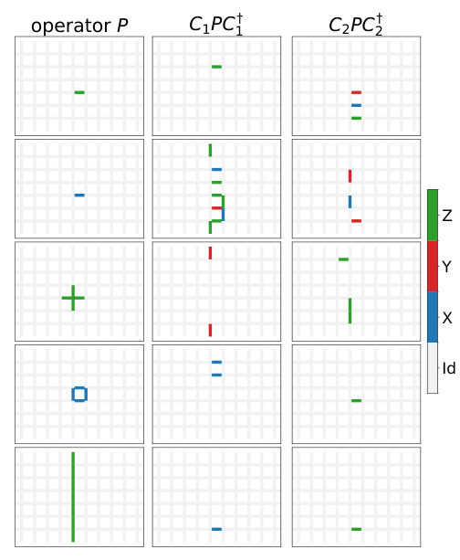
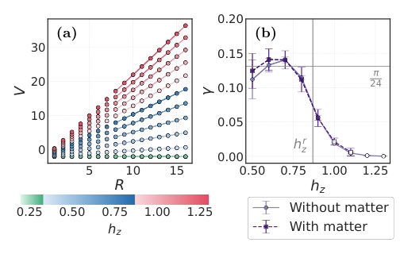
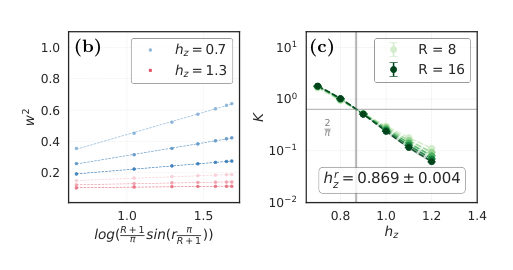
Summary. This work investigates flux tube dynamics in a 2D $\mathbb{Z}_2$-Higgs gauge theory using the advanced CAMPS tensor network method. By simulating dynamics far beyond current computational limits, the authors confirm that effective string theory describes non-equilibrium string behavior. The results reveal a previously unknown long-lived prethermal regime in strongly confined systems.
Why it may be interesting. The use of advanced tensor network techniques (CAMPS) to simulate real-time dynamics in gauge theories provides a powerful, scalable tool for studying non-equilibrium quantum many-body physics, bridging condensed matter and high-energy theory.
Main problem. The core problem is understanding the non-perturbative physics of confinement by studying real-time flux-tube dynamics in higher spatial dimensions.
Main result. The study provides ab initio evidence that effective string theory accurately captures non-equilibrium string dynamics, revealing a novel, long-lived prethermal regime for strongly confined flux tubes.
Method. The authors employ a specialized Clifford-augmented Matrix Product States (CAMPS) framework combined with a string-pull protocol to simulate real-time evolution.
Model / system. The system studied is a $\mathbb{Z}_2$-Higgs Gauge Theory defined on a $(2+1)$-dimensional lattice, whose dynamics are governed by a Hamiltonian related to the toric code.
Key observables. Confining potential (Lüscher term), energy spectrum of the flux tube, string roughening properties, and the persistence time of local dynamics ($t_J \gtrsim 100$).
Important parameters / regimes. System sizes and timescales are pushed orders of magnitude beyond current experimental and numerical capabilities.
Assumptions / limitations. The method assumes that Clifford-augmentation can incorporate gauge invariance and approximate duality, and the analysis is limited to $2+1$ dimensions.
Figures summary. Figures illustrate the Hamiltonian terms, the phase diagram showing confinement regimes, snapshots of string fields, the CAMPS ansatz, and the visualization of the string-pull protocol.
Paper structure. The paper introduces the physical problem, details the CAMPS methodology, benchmarks the approach using string-pulling to test effective string theory predictions, and concludes by analyzing the dynamics in different confinement regimes.
Understanding real-time flux-tube dynamics in more than one spatial dimension is key to unlocking the non-perturbative physics of confinement, and is now actively pursued by quantum computing and simulation experiments. However, describing such dynamics has proven to be extremely challenging with both experiments and state-of-the-art numerical simulations limited to small volumes and short timescales. Here we investigate flux tube statics and real-time evolution in a genuine two-dimensional $\mathbb{Z}_2$ Higgs gauge theory at system sizes and timescales order of magnitude beyond present experiments and numerics. The key enabling element is the recently introduced Clifford-augmented matrix product states (CAMPS) framework, which we demonstrate to parametrically reduce the entanglement that must be represented in the matrix product state; both in the pure-gauge limit and in the presence of dynamical matter. We benchmark this capability through stringent tests of effective string theory, including universal spectral features and flux tube roughening properties in presence of matter. We then introduce a string-pull protocol that selectively excites transverse modes and reconstructs their finite-size spectrum in real time. In the rough regime, the response is collective, and our simulations show that this is also well captured by universal effective string theory predictions. Strong confinement instead produces long-lived, lattice-locked local dynamics persisting to times $tJ \gtrsim 100$. These results provide ab initio evidence that effective string theory captures nonequilibrium string dynamics and reveal a hitherto unexplored long-lived prethermal regime of strongly confined flux tubes, providing a novel angle on how confinement dictates dynamics in more than one spatial dimension.
Authors: Jianwen Jie
Type: theory · Category: statistical mechanics · PDF: https://arxiv.org/pdf/2608.28390v1
Analysis basis: full PDF text, analyzed in chunks
Topic relevance: 🔥 driven-dissipative phase transition 4/5 · correlated / nonlocal dissipation 3/5 · methods for driven-dissipative 3/5 · non-equilibrium universality 3/5 · analog quantum simulation 2/5 · Keldysh / 2PI / non-Gaussian methods 1/5 · quantum measurements 1/5
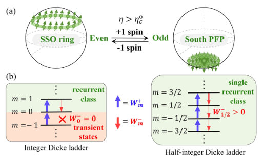
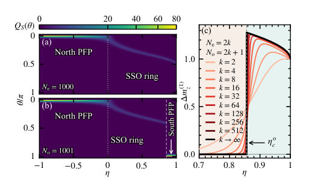
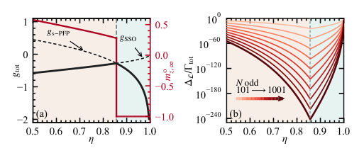
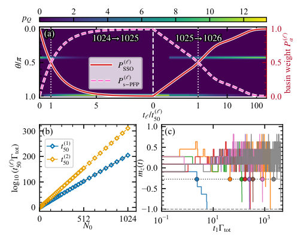
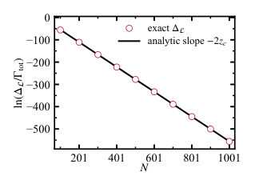
Summary. This paper demonstrates that adding a single spin to an open quantum system can induce a first-order phase transition, switching the steady state between two macroscopically distinct regimes. This control mechanism is fundamentally linked to the parity of the system size, which dictates whether the system samples a specific zero in the loss amplitude. The findings establish jump-operator zeros as a general route for single-constituent control over quantum steady states.
Why it may be interesting. This work provides a powerful, non-perturbative mechanism—using parity selection via jump-operator zeros—to control the macroscopic steady state of an open quantum system, which is highly relevant for understanding quantum dissipation and control in AMO physics.
Main problem. The study investigates whether adding a single constituent spin to a many-body open quantum system can induce a macroscopic switch between distinct steady-state phases.
Main result. The system exhibits a first-order dissipative phase transition, where the steady state switches between a phase-averaged ring and a south-polar fixed point, depending on the parity of the number of spins.
Method. The analysis employs steady-state calculations using the Lindblad equation, focusing on rate potentials, large-deviation theory, and analyzing parity-dependent connectivity defects in the Dicke ladder.
Model / system. The model is an open quantum system of N spin-1/2 constituents governed by a Lindblad equation, analyzed on the Dicke ladder structure. The dynamics are controlled by a dissipation imbalance parameter, $\eta$.
Key observables. Steady-state phases (SSO ring vs. s-PFP), magnetization contrast ($\Delta m_z$), and the order parameter derived from rate potentials.
Important parameters / regimes. Dissipation imbalance ($\eta$), critical imbalance ($\eta_c$), and the parity of the total number of spins (N).
Assumptions / limitations. The analysis relies on the assumption that the macroscopic switch is a global large-deviation effect, not a finite-order correction, and involves analyzing the system's behavior near specific zero-current conditions.
Figures summary. Figures illustrate the macroscopic switch between even-N and odd-N steady states, the parity-dependent connectivity defect (jump zero) in the Dicke ladder, and the evolution of rate potentials and crossing times with system size.
Paper structure. The paper progresses from establishing the general problem of single-constituent control, to deriving the parity-dependent connectivity defect, calculating the first-order phase transition via rate potentials, and finally analyzing the associated metastable dynamics and switching exponents.
Changing a many-body system by one constituent is normally expected to produce only a vanishing correction to an intensive observable. Here we show that, above a critical dissipation imbalance, adding one spin at fixed intensive controls switches the steady state of a dissipative collective spin between a phase-averaged ring and a south-polar fixed point. Unlike previously proposed one-spin sensing through dark-state interference, parity here determines whether the Dicke ladder samples a zero of the state-dependent nonlinear-loss amplitude. The integer-spin ladder samples this zero, making Dicke states with m<0 transient; the half-integer ladder misses it and remains a single recurrent class. Exact finite-size steady states show that exponential competition between stationary weights amplifies this microscopic connectivity difference, yielding a first-order dissipative phase transition confined to the odd-N sequence. One-spin loading, with all populated spin sectors retained, confirms that rare quantum fluctuations induce the switch without postselection. Our results establish jump-operator zeros as a route for single-constituent control of steady-state phases.
Authors: Hesam Zaravashan, Gabriele Gradoni, Mohsen Khalily
Type: both · Category: quantum information and computing · PDF: https://arxiv.org/pdf/2608.27650v1
Analysis basis: full PDF text, analyzed in chunks
Topic relevance: 🔥 quantum optics experiment 4/5 · analog quantum simulation 3/5 · interference shaping light 3/5 · quantum measurements 2/5 · Full counting statistics 1/5 · QC/QI experiment 1/5 · Tavis-Cummings & cavity-many-emitter 1/5 · driven-dissipative phase transition 1/5 · methods for driven-dissipative 1/5
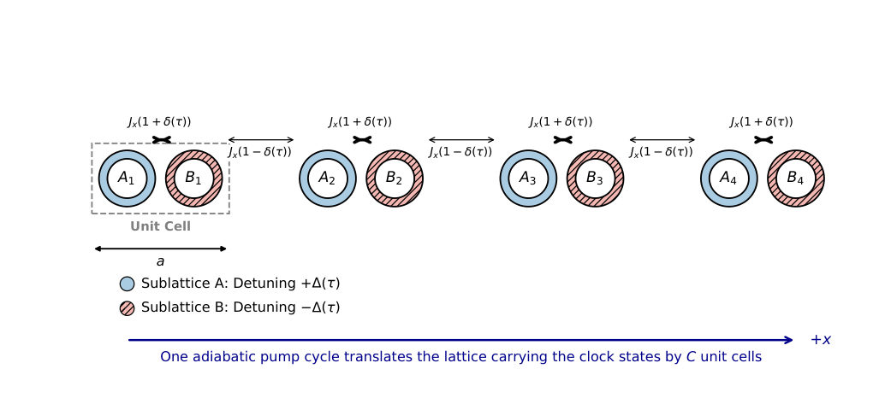
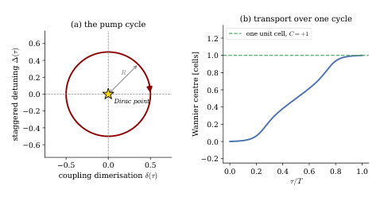
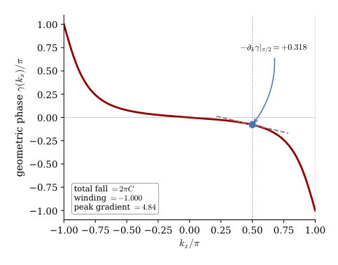
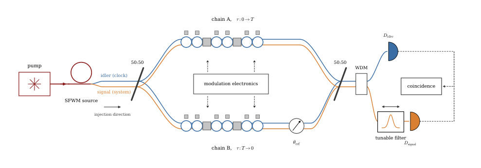
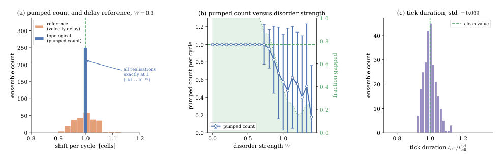
Summary. This paper proposes a photonic experiment to measure a topological invariant associated with time, modeled after the Page-Wootters construction. Using coupled microring resonators, they generate entangled photon pairs whose properties encode the topological winding number. This demonstrates a pathway to experimentally verify topological concepts in quantum optics.
Why it may be interesting. This work directly connects fundamental concepts from topological band theory (Chern numbers, winding numbers) to a physical, measurable quantum optical platform, providing a novel method for quantum resource quantification.
Main problem. The paper addresses whether a clock degree of freedom, when time is encoded in a Hilbert space via the Page-Wootters construction, can carry a measurable topological invariant.
Main result. They demonstrate that the topological winding of the geometric phase, quantified by the Chern number, can be measured using a photonic architecture, providing a robust, quantized readout.
Method. The measurement involves adiabatically cycling control parameters in a coupled microring array to induce a controlled geometric phase, which is then read out via two-photon coincidence interference.
Model / system. The system uses spontaneous four-wave mixing in a coupled microring array, modeling the clock/system partition using the Rice-Mele Hamiltonian. The process relies on the non-product nature of the generated signal-idler pair state.
Key observables. The winding number (related to the Chern number), the geometric phase $\gamma(k_x)$, and the quantized Wannier center displacement.
Important parameters / regimes. The gap closing point, the coupling strength ($\delta, \Delta$), and the required total number of coincidences ($\approx 5.6 imes 10^3$).
Assumptions / limitations. The measurement assumes the gap remains open for topological protection, and the readout relies on the signal photon providing the phase reference relationally.
Figures summary. Figures illustrate the loop in the control parameter space, the Berry curvature, and the quantized Wannier-centre advance, while tables detail parameter budgets and readout performance comparisons.
Paper structure. The paper first establishes the theoretical framework linking time to a topological invariant, then details the photonic implementation using coupled resonators, and finally presents the measurement protocol and robustness analysis.
The Page--Wootters construction gives time a Hilbert space, representing it as an internal degree of freedom whose readings the rest of the system evolves with respect to. We ask whether such a clock degree of freedom can carry a topological invariant, and we propose a photonic architecture in which it does and in which the invariant can be measured. Signal--idler pairs from spontaneous four-wave mixing in a coupled microring array supply the clock--system partition, with the idler occupying a Rice--Mele band whose staggered coupling and detuning are cycled adiabatically around a gap-closing point. One cycle acts on that band as a rigid translation by \(C\) unit cells, times a geometric phase periodic in the crystal momentum, times a dynamical phase, an identity exact in the adiabatic limit and independent of the state on which it acts. The readout targets the winding of that geometric phase across the Brillouin zone. Reversing the traversal of the pump loop cancels the dynamical phase and isolates twice the geometric phase in a two-photon coincidence fringe, while energy anticorrelation lets a filter on the signal scan the clock momentum without touching the clock and supplies the phase reference relationally, in place of an external optical reference. The estimate is protected on two independent levels, by the gap against smooth deformation and by the digital character of the unwrapping against noise below a threshold. A parameter budget anchored to thin-film lithium niobate places the requirements within reach at a conservative operating point.
Authors: Rohan Radhakrishnan, Rodion Reznik, Gilles Patriarche, Lorenzo Leandro, Igor Ilkiv, Anna Andreeva, Artem Khrebtov, George Cirlin, Nika Akopian
Type: experiment · Category: quantum information and computing · PDF: https://arxiv.org/pdf/2608.28353v1
Analysis basis: full PDF text, analyzed in chunks
Topic relevance: 🔥 QC/QI experiment 4/5 · quantum optics experiment 3/5 · analog quantum simulation 2/5 · interference shaping light 1/5 · quantum measurements 1/5
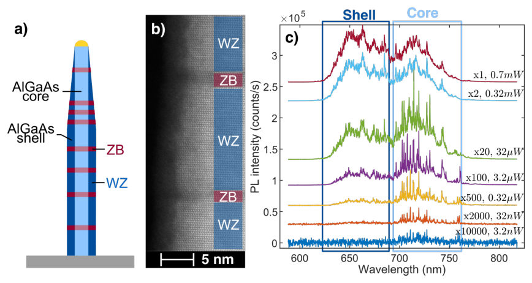
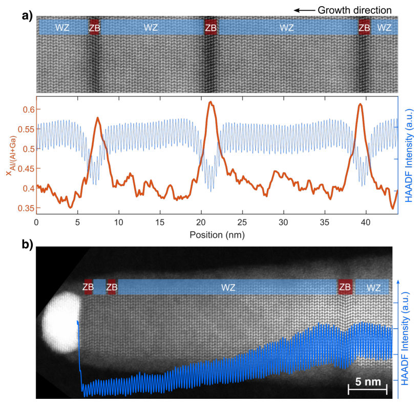
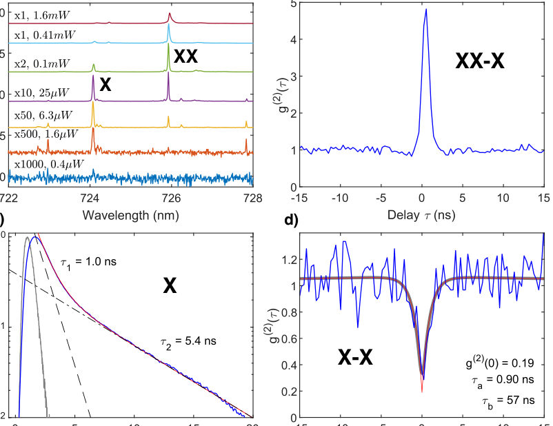
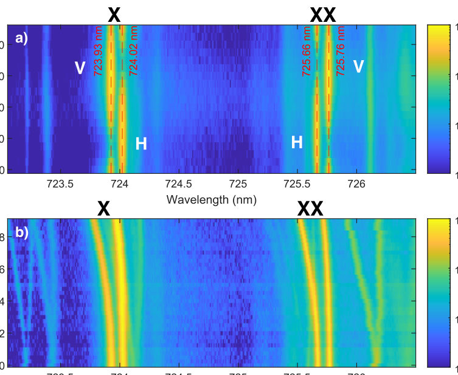
Summary. This work reports on the use of crystal-phase quantum dots (CPQDs) in AlGaAs nanowires as a highly controllable platform for quantum emitters. By achieving narrow linewidths and confirming single-photon emission, the authors demonstrate that these structures can meet the stringent optical quality requirements for quantum technologies. The findings establish the utility of crystal-structure control over material composition for scalable quantum device fabrication.
Why it may be interesting. The demonstration of high-quality, deterministically placed single-photon emitters in a novel material system (AlGaAs CPQDs) directly addresses a key hardware challenge for quantum photonic circuits and quantum networking.
Main problem. The paper addresses the need for scalable, high-quality quantum dot platforms for photonic quantum technologies by investigating crystal-phase quantum dots (CPQDs).
Main result. They report achieving bright single-photon emission with narrow linewidths ($\sim 61 \mu ext{eV}$) in AlGaAs nanowires, attributing this superior optical quality to a favorable type-I band alignment.
Method. The study combines structural characterization (HAADF-STEM, EDX) with advanced optical measurements, including time-resolved photoluminescence, polarization-resolved PL, and photon correlation measurements.
Model / system. The physical system is Quantum Dots formed by crystal-phase switches (CPQDs) embedded in AlGaAs nanowires, where confinement is dictated by the band offset between zincblende and wurtzite crystal structures.
Key observables. Narrow linewidths ($\sim 61 \mu ext{eV}$), single-photon antibunching ($g^{(2)}(0) < 0.5$), exciton fine-structure splitting, and Zeeman splitting.
Important parameters / regimes. Exciton lifetime ($\sim 1 ext{ ns}$), linewidths ($\mu ext{eV}$ range), and magnetic field strength (up to 9 T).
Assumptions / limitations. The superior performance is linked to the type-I band alignment, which avoids issues associated with type-II alignment, and the confinement potential is determined by the band offset, not just composition.
Figures summary. Figures illustrate the core-shell structure, compositional analysis showing Al fluctuations confined to the shell, and optical measurements confirming single-photon emission and quantum dot characteristics.
Paper structure. The paper progresses from establishing the limitations of previous QD platforms to presenting structural evidence of the AlGaAs core-shell structure, followed by detailed optical characterization proving high-quality single-photon emission and determining the type-I band alignment.
Crystal-phase quantum dots (CPQDs)$\unicode{x2014}$quantum dots in nanowires defined by crystal structure rather than material composition$\unicode{x2014}$constitute the only platform capable of fabricating quantum-dot arrays with the ultimate precision of a single atomic layer. This intrinsic control yields perfectly aligned quantum dots with atomically sharp interfaces, providing a unique pathway toward scalable quantum-dot-based photonic quantum technologies. To date, CPQDs have been studied primarily in binary semiconductors, such as InP and GaAs, where their emission linewidths are typically in the meV range, thereby limiting their technological potential. Here, we report, for the first time, CPQDs in AlGaAs nanowires and show bright single-photon emission with linewidths as narrow as 61 $μeV$ and low background emission, demonstrating optical quality well beyond typical CPQDs. We attribute this performance to a type-I band alignment, as suggested by an exciton lifetime of 1 ns, significantly shorter than that typically observed in type-II CPQDs. Additionally, we observe an exciton fine-structure splitting and a Zeeman splitting, as commonly observed in standard type-I self-assembled quantum dots.
Authors: Vittorio Buccheri, Ivo P. C. Cools, Nermin Trnjanin, Ankit Khola, Oleg Shvetsov, Thomas Kanne, Jesper Nygård, Attila Geresdi, Simone Gasparinetti
Type: experiment · Category: quantum information and computing · PDF: https://arxiv.org/pdf/2608.28428v1
Analysis basis: full PDF text, analyzed in chunks
Topic relevance: 🔥 QC/QI experiment 4/5 · driven-dissipative phase transition 3/5 · quantum optics experiment 2/5 · analog quantum simulation 1/5 · quantum measurements 1/5
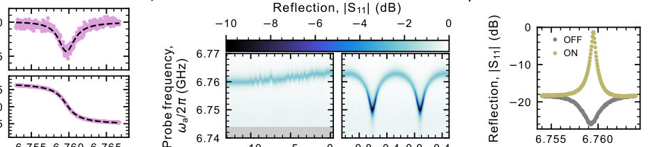
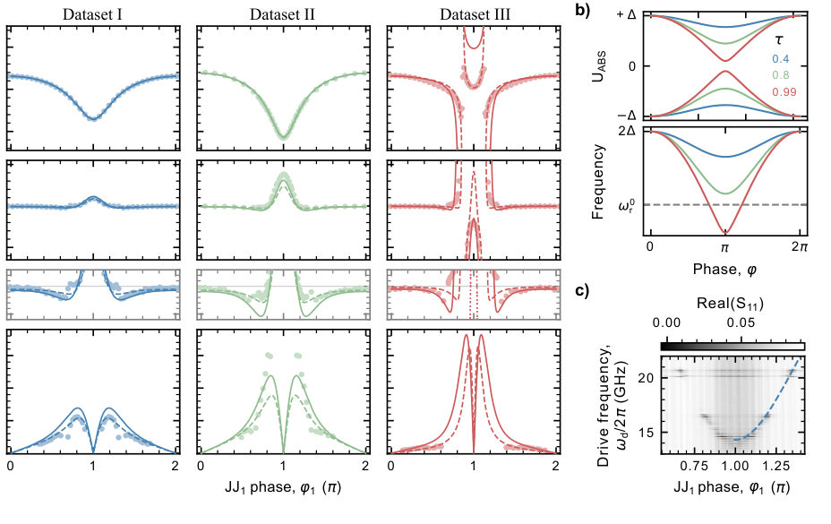
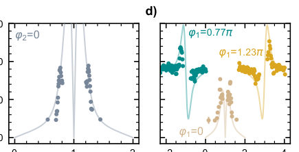
Summary. This paper reports on the experimental realization and characterization of highly nonlinear superconducting resonators using Al-InAs weak links. The researchers demonstrated the ability to tune the Kerr nonlinearity to zero while maintaining a strong, controllable cubic nonlinearity. This establishes the semiconductor-superconductor hybrid platform as a promising tool for quantum parametric amplification and quantum control.
Why it may be interesting. This work directly addresses the engineering challenge of creating nonlinear quantum elements, which is crucial for building scalable quantum circuits and quantum memories.
Main problem. The primary goal is to engineer superconducting resonators that exhibit a controllable cubic nonlinearity for quantum applications while simultaneously suppressing unwanted quartic (Kerr) nonlinearities.
Main result. The authors successfully demonstrated tunable three-wave mixing parametric amplification in a semiconductor-superconductor hybrid device, confirming the platform's viability for quantum control.
Method. The study combines electrical characterization (single-tone spectroscopy, power sweeps) with advanced microwave measurements (VNA) to map out nonlinear responses.
Model / system. The system is a superconducting resonator coupled to weak links formed by Al-InAs nanowires. The physics is modeled using an effective Andreev bound state (ABS) potential, which captures the nonlinear response.
Key observables. Kerr nonlinearity ($\delta\omega_{ ext{kerr}}$), three-wave mixing gain ($G$), resonance frequency ($\omega_r$), and the $-1 ext{dB}$ compression point.
Important parameters / regimes. Gate voltages ($V$), external magnetic flux ($\Phi$), and the ratio of linear to nonlinear coupling strengths.
Assumptions / limitations. The analysis relies on an effective model based on Andreev bound states phenomenology and approximations like the short-junction limit.
Figures summary. Figures detail SEM images of the device, circuit diagrams, and spectroscopy results showing junction activation, flux modulation, and power-dependent frequency shifts used to extract nonlinear coefficients.
Paper structure. The paper progresses from characterizing the basic linear response and junction behavior via spectroscopy, to quantifying the Kerr nonlinearity, and finally demonstrating and modeling the three-wave mixing parametric amplification.
Nonlinear microwave resonators are a versatile tool in quantum information processing, enabling parametric amplification, continuous variable quantum computing, and engineered mode interactions. Many of these applications especially benefit from cubic nonlinearities enabling three-wave mixing; at the same time, they are limited by quartic nonlinearities giving rise to undesired Kerr effects. A recurrent challenge is therefore to engineer resonators with a finite cubic nonlinearity while suppressing quartic terms. Here, we investigate a superconducting resonator hosting two weak links fabricated from an aluminum-capped indium arsenide nanowire. We characterize the Kerr nonlinearity as a function of magnetic flux and gate bias, showing that it can be tuned to zero with either control parameter. Furthermore, we experimentally demonstrate three-wave mixing in a semiconductor-superconductor hybrid device, establishing nonzero cubic nonlinearity. An effective model based on Andreev bound states qualitatively captures the observed trends. Our results validate semiconductor-superconductor hybrid devices as a promising platform for tunable nonlinear superconducting circuits, with applications in parametric amplification, quantum control of bosonic modes, and engineering interactions between microwave modes.
Authors: Kannan Vijayadharan, Matías Rubén Bolaños, Andrea Pompermaier, Tommaso Bertapelle, Francesco B. L. Santagiustina, Costantino Agnesi, Giuseppe Vallone, Paolo Villoresi
Type: experiment · Category: quantum information and computing · PDF: https://arxiv.org/pdf/2608.28190v1
Analysis basis: full PDF text, analyzed in chunks
Topic relevance: 🔥 quantum optics experiment 4/5 · QC/QI experiment 3/5 · interference shaping light 2/5 · quantum measurements 2/5
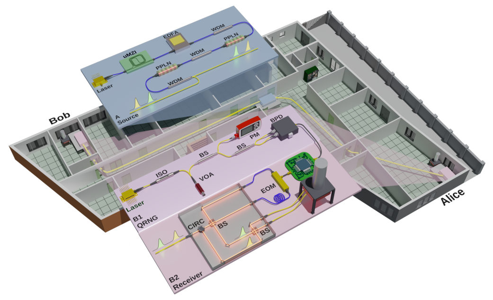
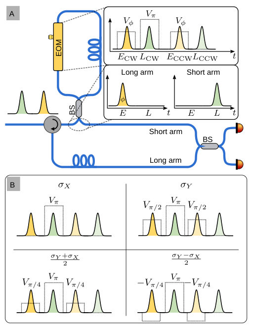
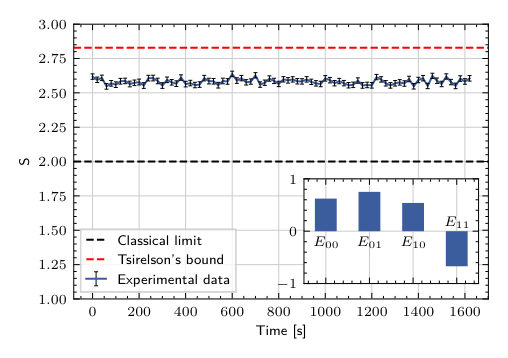
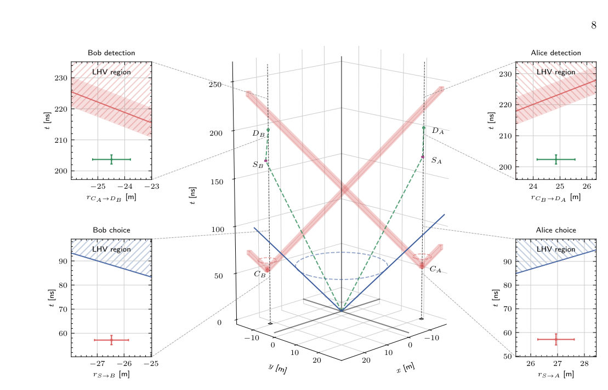
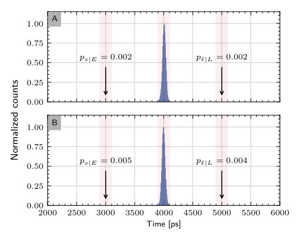
Summary. This paper reports a significant experimental achievement in quantum physics by demonstrating a loophole-free Bell test using time-bin entangled photons over a 49-meter distance. By employing a novel Sagnac-modulator architecture, the authors successfully eliminated the postselection loophole, confirming nonlocality with a high violation of the CHSH inequality. The results establish time-bin entanglement as a robust platform for practical quantum communication.
Why it may be interesting. This work provides a highly practical, device-independent demonstration of nonlocality using time-bin entanglement, which is crucial for advancing quantum communication protocols and quantum internet infrastructure.
Main problem. The paper addresses the challenge of performing loophole-free Bell tests using time-bin entangled photons while operating under strict spacetime constraints.
Main result. They successfully demonstrated a loophole-free Bell test achieving a CHSH violation of S = 2.583 ± 0.002 at a separation distance of 49.0 m, closing locality, freedom-of-choice, and postselection loopholes.
Method. The experiment utilizes a fiber-based platform with a Sagnac-modulator architecture to perform postselection-free measurements on time-bin entangled photons.
Model / system. The system uses time-bin encoding of photonic entanglement generated via SPDC, measured using customized fiber-coupled unbalanced Mach-Zehnder interferometers (uMZIs). The analysis incorporates a (2+1D) spacetime formalism to rigorously check loophole closure conditions.
Key observables. CHSH parameter S, fidelity ($\langle\Phi| ho|\Phi angle$), min-entropy ($H_{\min}$), and measured latencies (e.g., $t_{ ext{loopback}}$).
Important parameters / regimes. Separation distance of 49.0 ± 0.7 m; CHSH violation exceeding the local-realistic bound by over 265 standard deviations.
Assumptions / limitations. The authors explicitly note that the detection loophole remains open due to current technological limitations in achieving required overall detection efficiency.
Figures summary. Figures illustrate the experimental layout (Source, Alice, Bob) and the detailed scheme of the fast optical switch used for postselection-free measurement.
Paper structure. The paper progresses from defining the scientific problem (loophole-free Bell tests with time-bin entanglement) to detailing the advanced hardware implementation (Sagnac switch for postselection removal), followed by rigorous characterization of timing and randomness sources.
Entanglement gives rise to correlations between distant quantum systems that cannot be explained by local realistic theories. Bell inequality violations provide a direct way to reveal these correlations and certify nonlocality, especially when the relevant experimental loopholes are closed. Time-bin encoding, in which quantum information is encoded into well-defined temporal modes, is a commonly used platform for distributing photonic entanglement in optical fibers. Yet loophole-free Bell tests with time-bin entanglement have received comparatively little attention, owing in part to the postselection loophole introduced by conventional interferometric measurements. Here, we demonstrate a fiber-based platform for Bell tests with time-bin entanglement that simultaneously closes the locality, freedom-of-choice, and postselection loopholes. We observe a CHSH violation of $S=2.583 \pm 0.002$, exceeding the local-realistic bound by over 265 standard deviations. Notably, this rigorous certification of nonlocality is achieved at a separation distance of $49.0 \pm 0.7$ m, substantially shorter than previous photonic Bell tests addressing comparable space-time constraints. Beyond its foundational significance, our results demonstrate time-bin entanglement as a viable route towards practical device-independent quantum communication and a future quantum internet.
Authors: Xianlong Liu, Antonio M. García-García
Type: theory · Category: other · PDF: https://arxiv.org/pdf/2608.27897v1
Analysis basis: full PDF text, analyzed in chunks
Topic relevance: 🔥 Keldysh / 2PI / non-Gaussian methods 4/5 · methods for driven-dissipative 2/5 · correlated / nonlocal dissipation 1/5 · driven-dissipative phase transition 1/5 · non-equilibrium universality 1/5
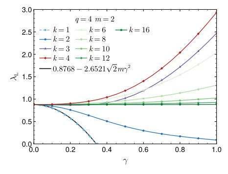
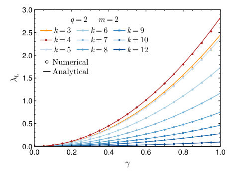
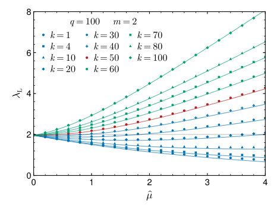
Summary. This theoretical paper investigates the interplay between quantum chaos and environmental coupling using the SYK model. By analyzing the Lyapunov exponent via OTOCs, the authors demonstrate that coupling to a specific type of bath can induce positive chaos even when the underlying system is integrable. This suggests a novel route to control scrambling in quantum many-body systems.
Why it may be interesting. This work provides a concrete theoretical mechanism demonstrating that environmental coupling can actively induce or enhance quantum chaos, which is crucial for understanding quantum information processing in realistic, noisy settings.
Main problem. The paper challenges the common belief that coupling a quantum system to an environment always suppresses quantum chaos, investigating how this coupling affects the Lyapunov exponent.
Main result. The authors show that for specific bath couplings (isotropic random $k>2$-body Majoranas), the Lyapunov exponent remains positive and can even increase with the coupling strength, inducing quantum chaos.
Method. The analysis employs the Schwinger-Keldysh formalism, deriving Schwinger-Dyson equations and utilizing Out-of-Time-Order Correlators (OTOCs) to calculate the Lyapunov exponent.
Model / system. The system studied is the $q$-body Majorana Sachdev-Ye-Kitaev (SYK) model coupled to a Markovian bath, whose dynamics are governed by a Lindblad master equation.
Key observables. Lyapunov exponent ($\lambda_L$), Out-of-Time-Order Correlators (OTOCs), and Green's functions ($G^>, G^<$).
Important parameters / regimes. Bath coupling strength ($\gamma$), number of Majorana bodies ($q$), and bath interaction order ($k$).
Assumptions / limitations. The analysis is performed in the large $N$ limit and involves approximations up to $O(m\gamma^4)$ in the action expansion.
Figures summary. Figures illustrate the calculated Lyapunov exponent ($\lambda_L$) versus dissipation strength ($\gamma$) for various $q$ and $k$ values, demonstrating the predicted enhancement of chaos.
Paper structure. The paper progresses from setting up the Lindblad dynamics and the path integral formulation to deriving the necessary Schwinger-Dyson equations, and finally calculating the OTOC kernels to determine the maximal eigenvalue ($\lambda_L$).
Recent examples have confirmed the common belief that quantum chaos is always suppressed in the presence of an environment. Here we show that this is not always the case. We compute the Lyapunov exponent of a $q$-body Majorana Sachdev-Ye-Kitaev (SYK) model coupled to a Markovian bath. Provided that the jump operators describing the bath are isotropic random $k > 2$-body Majoranas fields, the Lyapunov exponent is positive for any strength of the coupling to the bath. Interestingly, this also applies to $q=2$ where the SYK is integrable which indicates that many-body quantum chaos can be induced by the environment. Moreover, for $q > 2$, where the unitary dynamics is quantum chaotic, and sufficiently large $k$, the Lyapunov exponent increases with the coupling to the bath. Explicit analytical results are obtained in the $q=2$ and large $q$ limits. Our results put forward an alternate route to induce and control the generation of scrambling in quantum many-body systems which is of potential relevance in the design of quantum information devices.
Authors: Nana Chang, Xiaoji Zhou, Yanglin Zhou, Song Ci
Type: theory · Category: other · PDF: https://arxiv.org/pdf/2608.28054v1
Analysis basis: full PDF text, analyzed in chunks
Topic relevance: 🔥 analog quantum simulation 4/5 · Keldysh / 2PI / non-Gaussian methods 1/5 · methods for driven-dissipative 1/5 · quantum measurements 1/5 · scars & prethermalization 1/5
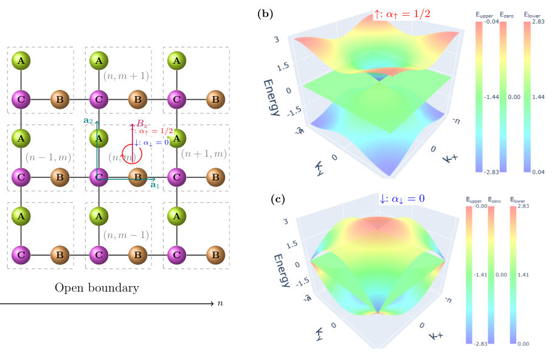
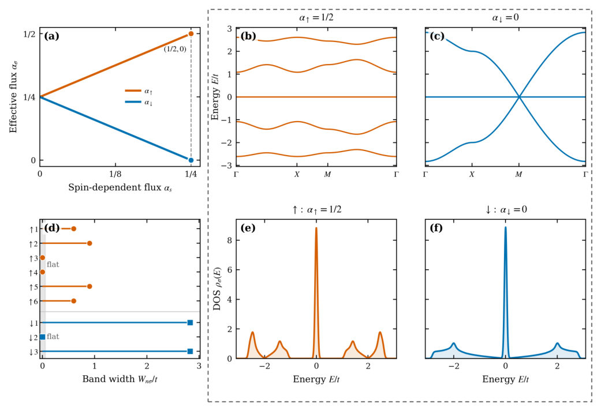
Summary. This paper investigates controlling quantum wave-packet transport in a Lieb lattice by applying spin-dependent synthetic magnetic fluxes. The authors show that this flux engineering allows for a robust, reversible suppression of wave-packet spreading for one spin component relative to another. This establishes a powerful tool for state-selective quantum control in lattice simulators.
Why it may be interesting. This work provides a concrete, tunable mechanism for controlling quantum transport based purely on internal quantum states (spin) using engineered gauge fields, which is highly relevant for quantum simulation platforms.
Main problem. The research aims to achieve reversible, internal-state-selective control over matter-wave transport without relying on spin-flip processes or inter-particle interactions.
Main result. The study demonstrates that spin-dependent synthetic flux can induce pronounced, controllable dynamical slowing for one spin component relative to another, even when the spectral flattening does not meet the criteria for exact Aharonov-Bohm caging.
Method. The authors combine band-resolved calculations of the magnetic Bloch Hamiltonian with real-time wave-packet simulations to diagnose transport properties.
Model / system. The system is a two-dimensional nearest-neighbor Lieb lattice hosting spin-1/2 particles. The model incorporates a spin-dependent synthetic gauge field introduced via Peierls phases, leading to spin-dependent effective fluxes ($\alpha_\sigma$).
Key observables. Mean-square displacement ($\langle r^2 angle$), finite-region retention probability, and the contrast in mean-square displacement ($ ext{CMSD}$).
Important parameters / regimes. The working point is set at $\alpha_0 = \alpha_s = 1/4$, yielding fluxes $(\alpha_\uparrow, \alpha_\downarrow) = (1/2, 0)$. The analysis also probes flux detuning ($\delta\alpha$).
Assumptions / limitations. The primary limitation noted is that spectral flattening alone is insufficient for strict caging; real-time dynamics must confirm the slowing effect.
Figures summary. Figures illustrate the lattice geometry and spin-dependent fluxes. Band structures show spin-up having flattened bands while spin-down remains dispersive. Dynamics show spin-up propagation suppression relative to spin-down, and the contrast reverses upon flux reversal.
Paper structure. The paper first establishes the model using spin-dependent fluxes in the Lieb lattice. It then analyzes the spectral properties, noting the failure of the all-bands-flat condition. Finally, it uses real-time simulations to demonstrate the robust, reversible, and selective dynamical slowing effect.
We investigate reversible internal-state-selective wave-packet transport induced by spin-dependent Peierls phases in a two-dimensional nearest-neighbor Lieb lattice. The two conserved spin components experience effective fluxes $α_σ=α_{0}+s_σα_{s}$, where $s_{\uparrow,\downarrow}=\pm1$. At the working point $α_{0}=α_{s}=1/4$, the spin-up and spin-down components experience $α_{\uparrow}=1/2$ and $α_{\downarrow}=0$, respectively. A band-resolved calculation in the $q=2$ magnetic unit cell shows that the spin-up spectrum contains two zero-energy flat subbands associated with the sublattice-imbalance flat-band sector, whereas the remaining four subbands retain finite bandwidths. The half-flux sector therefore fails the all-bands-flat condition and does not realize exact Aharonov--Bohm caging for a generic localized initial state. Nevertheless, real-time simulations reveal a pronounced suppression of spin-up propagation relative to the dispersive spin-down component, manifested by a smaller mean-square displacement and an enhanced finite-region retention probability over the pre-reflection time window. Reversing the state-dependent flux interchanges the slow and fast spin channels, while the dynamical contrast remains robust against moderate flux detuning. These results establish spin-dependent synthetic flux as a reversible means of controlling internal-state-resolved matter-wave transport without spin-flip processes or interactions, and provide complementary spectral and real-space criteria for distinguishing exact caging from finite-time dynamical slowing in atomic and photonic flat-band simulators.
Authors: Sumit Chongder
Type: experiment · Category: quantum information and computing · PDF: https://arxiv.org/pdf/2608.28535v1
Analysis basis: full PDF text, analyzed in chunks
Topic relevance: 🔥 QC/QI experiment 4/5 · quantum measurements 2/5
Summary. This paper experimentally characterizes error mitigation and sampling strategies on superconducting quantum hardware under strict, fixed measurement budgets. By decomposing the Mean-Squared Error into bias and variance, the authors demonstrate that advanced techniques like ZNE do not guarantee improvement and must be carefully validated for each specific hardware setup and circuit depth.
Why it may be interesting. It provides crucial, practical guidelines for quantum algorithm developers, showing that theoretical error mitigation gains can be nullified or outweighed by finite-shot noise costs on real hardware.
Main problem. The study evaluates the true benefit of quantum error mitigation techniques (like ZNE) on NISQ hardware when the total measurement-shot budget is fixed, addressing the tension between bias reduction and increased sampling variance.
Main result. Neither standard Zero-Noise Extrapolation (ZNE) nor adaptive shot allocation should be applied by default, as the benefit must be validated per device, circuit, and fixed sampling budget.
Method. The authors used a fixed-budget, bias-variance-aware benchmarking protocol comparing raw measurements against ZNE and adaptive shot allocation schemes.
Model / system. The experiments were conducted on a superconducting quantum processor (IBM Quantum Heron) using circuits like GHZ states and repeated-layer circuits to test error scaling.
Key observables. Expectation-value error, Mean-Squared Error (MSE), bias, variance, and mitigation gain.
Important parameters / regimes. Fixed total measurement-shot budget, circuit depth ($L$), effective noise scale, and qubit connectivity.
Assumptions / limitations. The analysis relies on the bias-variance decomposition of the MSE, and the adaptive allocation rule is seeded using pilot runs.
Figures summary. Figures are mentioned to show empirical estimator variance tracking $1/N$ shot-noise prediction and depth scaling trends for repeated-layer circuits.
Paper structure. The paper is structured around a hardware-validated benchmarking protocol, comparing raw estimation against various mitigation techniques (ZNE, adaptive allocation) across different circuit depths and noise regimes.
We experimentally study error mitigation and finite-shot sampling on superconducting quantum hardware under a constrained execution budget. The study combines calibration-aware qubit selection, circuit-depth scaling, zero-noise extrapolation, dynamical decoupling, readout-error mitigation, and repeated-shot estimation on an IBM Quantum processor. Experiments are organized across ideal simulation, noise-model simulation, and physical-device execution to separate sampling uncertainty from device-induced error. We investigate how mitigation performance changes with circuit depth, effective noise scale, qubit connectivity, and measurement budget, and quantify accuracy using expectation-value error, mean-squared error, statistical uncertainty, and mitigation gain. A fixed hardware-execution budget is used to evaluate shot allocation strategies and repeated measurements without relying on unlimited sampling. The resulting analysis provides a hardware-aware characterization of when mitigation improves expectation-value estimation and when finite-shot fluctuations offset the benefit of additional mitigation overhead. The implementation uses contemporary Qiskit and IBM Quantum Runtime workflows and is designed to provide reproducible experimental evidence for error-mitigation studies on current quantum processors.
Authors: Xiqiao Wang, Mark Field, Teng Zhang, Xian Wu, Ferhat Aydinoglu, Joel Howard, Angela Q. Chen, Sara Elzeiny, Robert Smith, Timothy McSorley, Nicholas Sharac, Eyob Sete, Alysson Gold, Hilal Cansizoglu, Greg Stiehl, Josh Mutus, Kameshwar Yadavalli, Andrew Bestwick, Stefano Poletto, Raja Katta, David P. Pappas
Type: experiment · Category: quantum information and computing · PDF: https://arxiv.org/pdf/2608.27789v1
Analysis basis: full PDF text, analyzed in chunks
Topic relevance: 🔥 QC/QI experiment 4/5 · quantum measurements 1/5
Summary. This paper details the use of Alternating-Bias-Assisted Annealing (ABAA) to achieve high-precision, scalable frequency tuning for superconducting transmon qubits. By demonstrating high yield and precision across entire wafers and multi-module processors, the authors confirm ABAA's role as a critical enabler for building large-scale quantum computers. The research addresses key engineering hurdles related to fabrication variation and yield limitations in superconducting quantum hardware.
Why it may be interesting. This work provides critical experimental validation of a scalable, high-precision tuning mechanism (ABAA) necessary to realize complex, large-scale quantum processors, directly impacting the physical realization of quantum computation.
Main problem. The primary challenge is enhancing the throughput and yield of qubit frequency tuning techniques as superconducting quantum processors scale up to large qubit counts.
Main result. The Alternating-Bias-Assisted Annealing (ABAA) technique achieves high wafer-scale tuning precision ($\sigma \sim 0.5\%$) and high component yield ($\ge 98.8\%$), enabling the realization of modular processors exceeding 1600 qubits.
Method. The authors characterize ABAA performance on 150-mm wafers, employing a modular tiling strategy to overcome monolithic yield limitations, and demonstrating its application on a quad-module QPU.
Model / system. The work focuses on superconducting transmon qubits coupled via Josephson junctions (JJs) on a 150-mm wafer platform, utilizing the ABAA process for post-fabrication frequency tuning.
Key observables. Wafer-scale JJ resistance tuning precision ($\sigma$), component-level yield, empirical frequency targeting precision ($\sigma \sim 30 ext{ MHz}$), and two-qubit gate fidelities.
Important parameters / regimes. JJ breakdown voltage (BDV) is identified as a vital process control parameter; the modular tiling approach is key to scaling beyond single-wafer limits.
Assumptions / limitations. The modular architecture is necessary because the intrinsic component yield of monolithic QPUs is insufficient for very large qubit counts.
Figures summary. Figures illustrate the tuning profile, wafer maps showing tuned components, and plots correlating gate fidelity with detuning errors, demonstrating the success of ABAA tuning.
Paper structure. The paper progresses from characterizing the ABAA technique on a wafer scale (precision and yield) to demonstrating its application on a multi-module quantum processor, validating its scalability for high-fidelity Hamiltonian targeting.
Recent advances in the alternating-bias-assisted annealing (ABAA) technique have successfully mitigated intrinsic Josephson-junction (JJ) fabrication variations. This new technique enables precision qubit frequency tuning alongside simplicity. However, it is critical to enhance tuning throughput and yield while investigating the factors that drive targeting performance as the technology scales. Here, we characterize ABAA tuning performance within a 150-mm wafer process flow and extend this technique to simultaneous, multi-channel tuning, demonstrating that a wafer-scale JJ resistance tuning precision of $σ=0.50\pm0.05\%$ alongside a component-level yield of $\ge 98.8\%$ can be achieved. Furthermore, we demonstrate a strong correlation between yield, tuning speed, and junction breakdown voltage, establishing the latter as a vital process control parameter for meeting production goals. Finally, we demonstrate a successful implementation of ABAA tuning on a quad-module quantum processor (Rigetti Cepheus-1-36Q), where we achieve an empirical frequency targeting precision of $σ\sim 30\text{ MHz}$ in both qubit and qubit-qubit detuning frequencies, contributing to high median two-qubit gate fidelities. These results confirm the efficacy and scalability of ABAA for high-precision Hamiltonian targeting, a critical enabler for modular superconducting quantum processor technology.
Authors: Marc Cuenca-Laràs, Ming Li, Carlos Navarrete-Benlloch, Germán J. de Valcárcel
Type: theory · Category: other · PDF: https://arxiv.org/pdf/2608.28506v1
Analysis basis: full PDF text, analyzed in chunks
Topic relevance: Keldysh / 2PI / non-Gaussian methods 3/5 · correlated / nonlocal dissipation 3/5 · driven-dissipative phase transition 3/5 · methods for driven-dissipative 3/5 · quantum measurements 3/5 · superradiant laser 3/5 · interference shaping light 2/5 · non-equilibrium universality 2/5
Summary. This paper develops a generalized Langevin theory to handle non-Markovian open quantum dynamics by extending phase-space methods to include environmental memory effects. It applies this theory to the problem of delayed coherent feedback in a laser, successfully predicting the characteristic narrowing of the laser linewidth both above and just below the lasing threshold.
Why it may be interesting. This work provides a powerful, systematic extension of established phase-space techniques into the non-Markovian regime, which is crucial for accurately modeling complex quantum optical systems like lasers with memory effects.
Main problem. The primary challenge addressed is extending phase-space methods to accurately describe non-Markovian open quantum dynamics.
Main result. The framework successfully models non-Markovian effects via a memory kernel in the deterministic Langevin terms, and it is applied to predict laser linewidth narrowing in delayed coherent feedback systems.
Method. The authors apply phase-space representations (like the P representation) to the full system+environment dynamics, integrating out the environment to yield a general Langevin equation for the system of interest.
Model / system. The system involves an open quantum system (S) coupled to an environment (E), with a specific application being a laser driven by delayed coherent feedback. The dynamics are governed by a Liouville equation, which is mapped onto stochastic Langevin equations.
Key observables. Laser linewidth ($\Lambda$), Power Spectrum ($S(\omega)$), and the narrowing exponent ($p$).
Important parameters / regimes. Delay time ($T$), feedback strength ($f$), and the environment correlation time/kernel ($K( au)$).
Assumptions / limitations. The analysis assumes the environment starts in the vacuum state (vanishing noise term) and relies on the use of normally ordered phase-space representations.
Figures summary. Figure 1(a) plots the normalized laser linewidth vs. $1+\kappa$ for various pump parameters, fitted to a power law $(1+\kappa)^{-p}$. Figure 1(b) shows the narrowing exponent $p$ as a function of $C-1$.
Paper structure. The paper develops a general Langevin framework for non-Markovian dynamics by treating the full S+E system. It then applies this framework to the specific problem of delayed coherent feedback, deriving analytical predictions for the laser linewidth both above and below threshold.
Phase-space methods are powerful tools for the treatment of Markovian open quantum systems: they map the reduced dynamics of a system S, in interaction with an environment E, exactly onto Langevin equations for c-number stochastic variables, as opposed to Heisenberg-Langevin equations for operators. Langevin equations provide analytical insight in key regimes and excel at handling strong nonlinearities and couplings, where other methods often falter. Extending phase-space methods to non-Markovian dynamics, however, has remained a long-standing challenge. Here we address this gap by applying phase-space representations to the full S+E system; integrating out the environmental degrees of freedom then yields a general Langevin framework for S that incorporates both deterministic and stochastic contributions from E. Normally ordered representations, such as the Glauber-Sudarshan P representation and its positive variant due to Drummond and Gardiner, lead to Langevin equations in which (i) non-Markovian effects emerge exclusively in the deterministic terms, via a memory kernel, and (ii) noise contributions vanish when E is initially in the vacuum state. To demonstrate the power of this framework, we address the paradigmatic problem of delayed coherent feedback, in which the system is driven by its own past state, and study its impact on the laser linewidth: we recover the narrowing observed well above threshold and predict an enhanced narrowing just above it. Crucially, the number of stochastic variables scales linearly with the system size, making the framework suitable for problems ranging from a few degrees of freedom to genuinely many-body systems. This opens the way to the systematic study of non-Markovian driven-dissipative quantum systems using the same analytical and numerical tools that have long made phase-space methods so successful in the Markovian regime.
Authors: Hassan Alnatah, Shuang Liang, Shouvik Mukherjee, Qi Yao, Ashton S. Bradley, David W. Snoke
Type: theory · Category: quantum gases · PDF: https://arxiv.org/pdf/2608.27898v1
Analysis basis: full PDF text, analyzed in chunks
Topic relevance: Keldysh / 2PI / non-Gaussian methods 3/5 · correlated / nonlocal dissipation 3/5 · driven-dissipative phase transition 3/5 · methods for driven-dissipative 3/5 · analog quantum simulation 2/5 · non-equilibrium universality 2/5 · quantum measurements 2/5 · Frenkel-Kontorova 1/5
Summary. This paper develops a microscopic theory for calculating the drag force on a Bose-Einstein condensate due to interaction with a moving fermionic reservoir. By employing the Born-Markov approximation, the authors derive an effective drag potential that modifies the condensate's Gross-Pitaevskii equation. The resulting drag force is shown to be linearly proportional to the relative velocity, providing a fundamental understanding of dissipation in quantum fluids.
Why it may be interesting. This work provides a rigorous, microscopic derivation of dissipation (drag) in quantum gases, connecting the environment's fluctuations (via the Fluctuation-Dissipation Relation) directly to the macroscopic dynamics of the condensate.
Main problem. The paper derives a microscopic theory to calculate the drag force experienced by a Bose-Einstein condensate (BEC) when it interacts with a moving, noncondensed fermionic reservoir.
Main result. The drag force is found to be proportional to the relative velocity between the condensate and the reservoir, leading to a friction law $F = -\Gamma_d (v_\psi - v_d)$.
Method. The derivation uses the Born-Markov approximation to eliminate reservoir degrees of freedom, resulting in an effective, history-dependent drag potential added to the Gross-Pitaevskii equation.
Model / system. The system consists of a BEC (bosons, $\psi$) interacting with a drifting fermionic bath (reservoir, $\phi$). The interaction is modeled via a Hamiltonian, and the dynamics are governed by an effective G-P equation incorporating the drag potential.
Key observables. Drag potential ($V_{ ext{drag}}$), drag force ($F$), and the friction coefficient ($\Gamma_d$).
Important parameters / regimes. Reservoir density fluctuations, condensate density profile, and the relative drift velocity ($v_\psi - v_d$).
Assumptions / limitations. The Born approximation, the Markov approximation (short reservoir memory), and the assumption that the reservoir is spatially uniform and in a steady state.
Figures summary. Figure 1 schematically illustrates the condensate interacting with a drifting reservoir, leading to a drag potential, and shows how the momentum distribution shifts based on the relative drift velocity.
Paper structure. The paper builds the theory by starting from the full Hamiltonian, applying approximations to derive the master equation, transforming it into the Schrödinger picture, and finally deriving the explicit form of the drag potential and the resulting force equation.
We derive a microscopic theory of drag for a Bose-Einstein condensate interacting with a moving reservoir. Starting from interactions between a condensate and a drifting fermionic bath, we integrate out the bath degrees of freedom within the Born--Markov approximation to obtain an effective Gross--Pitaevskii equation with a drag potential. From this potential we derive an effective drag force and obtain a closed expression for the drag coefficient, determined by the reservoir density fluctuations and the condensate density profile. As an application, we simulate the drag for an exciton--polariton condensate interacting with a drifting electron gas.
Authors: Lea Lautenbacher, Giovanni Spaventa, Susana F. Huelga, Martin B. Plenio
Type: theory · Category: statistical mechanics · PDF: https://arxiv.org/pdf/2608.28488v1
Analysis basis: full PDF text, analyzed in chunks
Topic relevance: correlated / nonlocal dissipation 3/5 · driven-dissipative phase transition 3/5 · methods for driven-dissipative 3/5 · Keldysh / 2PI / non-Gaussian methods 2/5 · non-equilibrium universality 2/5 · quantum measurements 2/5 · scars & prethermalization 1/5
Summary. This work examines how environmental memory affects the efficiency of molecular photoreactions compared to theoretical thermodynamic limits. By modeling the system with a structured environment, the authors demonstrate that non-Markovian dynamics can surpass the limitations imposed by simple Markovian assumptions. Ultimately, they argue that achieving the absolute optimal performance requires a specific, engineered microscopic coupling structure.
Why it may be interesting. It directly addresses the gap between model-independent thermodynamic limits and the constraints imposed by realistic, structured quantum environments, which is central to modern open quantum system theory and quantum thermodynamics.
Main problem. The paper investigates whether environmental memory (non-Markovianity) can allow a physical process to approach the optimal performance bounds set by resource theories, particularly in molecular photoreactions.
Main result. Non-Markovian dynamics are shown to lift dynamical restrictions associated with Markovian thermal evolutions, allowing for enhanced population transfer, although the memory effects studied are not sufficient to reach the absolute optimal thermal operation bound.
Method. The analysis uses resource-theoretic bounds (Thermal Operations) and compares them against the time evolution governed by a microscopic master equation, quantifying non-Markovianity using measures like the RHP measure.
Model / system. The model is a tunable microscopic system of a molecular photoswitch (a 4-level electronic system) coupled to a structured vibrational environment, allowing interpolation between Markovian and non-Markovian regimes.
Key observables. Efficiency/Yield ($\gamma$), which is the population in the desired electronic state; resource bounds ($\gamma_{TO}$ and $\gamma_{MTO}$).
Important parameters / regimes. Coupling strengths ($g_i$), damping rates ($\kappa_i$), and mode frequencies ($\omega_i$); the degree of non-Markovianity.
Assumptions / limitations. The analysis relies on resource-theoretic bounds derived from general thermal operations, which are model-independent benchmarks.
Figures summary. Figures illustrate the comparison between the achievable yield ($\gamma$) and the theoretical bounds ($\gamma_{TO}$ vs $\gamma_{MTO}$), showing how non-Markovianity enhances transfer beyond the Markovian limit.
Paper structure. The paper establishes resource-theoretic bounds, models the system dynamics using a tunable Hamiltonian, and then analyzes how non-Markovianity modifies the accessible state space relative to these theoretical limits, concluding by focusing on the necessary microscopic structure for optimal performance.
Resource-theoretic approaches to thermodynamics provide powerful, model-independent bounds on the efficiency of physical processes, because they do not rely on microscopic details of the environment. Whether such bounds can be approached by realistic dynamics generated by explicit system-environment interactions remains an open question. Photoisomerization, a fundamental molecular photoreaction, offers a concrete setting to examine this issue. We introduce a tunable microscopic model of a molecular photoswitch coupled to a structured vibrational environment, which interpolates continuously between Markovian and non-Markovian regimes. Resource-theoretic analysis predicts in particular that Markovian Thermal Operations achieve strictly lower yields than general Thermal Operations. We show that environmental memory lifts dynamical restrictions associated with Markovian thermal evolutions, thereby enlarging the set of transformations accessible to the microscopic dynamics. Approaching the thermal operation bound, however, depends on the microscopic coupling structure that generates this memory and directs the resulting dynamics towards the target transformation.
Authors: Avinaba Mukherjee
Type: theory · Category: quantum gases · PDF: https://arxiv.org/pdf/2608.27947v1
Analysis basis: full PDF text, analyzed in chunks
Topic relevance: analog quantum simulation 3/5 · driven-dissipative phase transition 3/5 · non-equilibrium universality 3/5 · Keldysh / 2PI / non-Gaussian methods 2/5 · methods for driven-dissipative 2/5 · correlated / nonlocal dissipation 1/5 · quantum measurements 1/5 · scars & prethermalization 1/5
Summary. This theoretical study examines how noise affects coherence resonance in BECs formed from coupled atoms and molecules via a Feshbach resonance. By using the Bloch-sphere formalism, the authors show that noise can induce resonant behavior, allowing researchers to map out optimal parameter regimes for controlling quantum coherence in these quantum gas systems.
Why it may be interesting. This work directly addresses noise-induced phenomena (Coherence Resonance) in a highly relevant platform (BECs), providing quantitative tools (Purity, Bloch formalism) to study non-equilibrium quantum dynamics.
Main problem. The paper investigates Coherence Resonance (CR) phenomena in the non-equilibrium dynamics of atomic-molecular Bose-Einstein Condensates (BECs) coupled via a Feshbach resonance.
Main result. The interplay between intrinsic system timescales and external noise sources can lead to noise-induced resonant behavior, which is characterized by extrema in coherence measures like purity and the Husimi-Q distribution.
Method. The analysis employs the Bloch-sphere formalism and the large-N limit to derive and solve the stochastic evolution equations for the system's first moments.
Model / system. The system is an atom-dimer two-mode BEC modeled as a two-level system, governed by a Hamiltonian including atom-atom, molecule-molecule, and atom-molecule interactions, coupled by a Feshbach resonance.
Key observables. Purity, Husimi-Q distribution, and the characteristic relaxation time scale ($T_i$).
Important parameters / regimes. Initial polarization, Feshbach detuning ($\epsilon_b$), and noise strengths ($\gamma_x, \gamma_z$).
Assumptions / limitations. The analysis uses a single-mode condensate approximation and assumes the total particle number is conserved.
Figures summary. Figures illustrate the real-time relaxation dynamics of the Bloch vector components under noise, and show the dependence of the characteristic time scale on initial polarization and detuning.
Paper structure. The paper first establishes the Hamiltonian and dynamics using the Bloch-vector formalism, then analyzes the relaxation time scale by linearizing the equations, and finally examines how noise modifies the coherence resonance point by analyzing time-averaged coherence measures.
We investigate the non-equilibrium dynamics of atomic-molecular Bose-Einstein condensates coupled via a Feshbach resonance, with Gaussian white noise acting on both the coupling strength and the detuning. Using the bosonic Josephson-junction and Bloch-sphere formalisms, we examine how coherence (coupling) noise and imbalance (detuning) noise modify the coherence-resonance point as functions of the initial polarization and the Feshbach detuning. Noise plays a more coherent role when its characteristic timescale matches the intrinsic timescales of the dynamics, leading to extrema in the time-averaged purity and the Husimi-Q distribution.
Authors: Gayatree Swain
Type: theory · Category: quantum information and computing · PDF: https://arxiv.org/pdf/2608.28153v1
Analysis basis: full PDF text, analyzed in chunks
Topic relevance: correlated / nonlocal dissipation 3/5 · driven-dissipative phase transition 3/5 · methods for driven-dissipative 3/5 · non-equilibrium universality 2/5 · quantum measurements 2/5 · Keldysh / 2PI / non-Gaussian methods 1/5 · analog quantum simulation 1/5 · scars & prethermalization 1/5
Summary. This paper analyzes a two-qubit quantum battery to determine how coupling the qubits to the environment affects energy storage and coherence. By comparing 'separated' versus 'co-located' environmental noise channels, the authors show that the optimal setup depends on whether one prioritizes total extractable work or the advantage gained from collective operations. This highlights environmental placement as a key control knob for quantum device performance.
Why it may be interesting. This work directly addresses open quantum system control, showing how engineering the coupling to the environment can be a tunable resource to optimize quantum battery performance for specific tasks.
Main problem. The study investigates how the spatial arrangement of environmental coupling channels influences the dynamics of coherence and the extractable work (ergotropy) in a two-qubit quantum battery.
Main result. The optimal environmental configuration (separated vs. co-located) depends on the initial coherence distribution and the specific performance metric (e.g., global ergotropy vs. global-local gap).
Method. The dynamics are analyzed using master equations incorporating thermal baths and Random Telegraph Noise (RTN), evaluating coherence via $l_1$-norm and work extraction via global and local ergotropy.
Model / system. The system is a two-qubit quantum battery coupled by an XY-exchange interaction, subjected to environmental noise modeled by a Lindblad master equation and RTN terms. Two configurations are compared: separated (RTN on A, bath on B) and co-located (both on B).
Key observables. Local $l_1$-norm coherence, global ergotropy (extractable work), and the global-local ergotropy gap.
Important parameters / regimes. Exchange interaction strength ($J$), thermal coupling ($\kappa$), initial coherence location, and the specific environmental configuration.
Assumptions / limitations. The analysis relies on weak-coupling approximations for the thermal bath.
Figures summary. Figures compare the dynamics of local coherence and the maximum global-local ergotropy gap ($\Delta W_{ ext{max}}$) as a function of the exchange interaction strength ($J$) for different initial states and thermal couplings.
Paper structure. The paper models the system dynamics using master equations for two distinct environmental placements (separated vs. co-located) and analyzes the evolution of coherence and work extraction using multiple diagnostics.
We investigate how the spatial arrangement of environment channel influences the dynamics of coherence and work extraction in a two-qubit quantum battery with resonant qubits coupled through an XY-exchange interaction. Qubit B is attached to a finite-temperature thermal bath, while RTN noise is applied either to qubit A or to qubit B, depending on whether it is in a separated or co-located configuration, respectively. Two complementary product states are considered to initialise the coherence on different qubits. The dynamics are evaluated using local $l_{1}$-norm coherence, global ergotropy and the global-local ergotropy gap. The results suggest that a stronger exchange interaction enhances the redistribution of coherence without necessarily improving retention of extractable work. For the parameter investigated, the greater global ergotropy is retained in the case of the co-located configuration, especially when the initially coherent qubit is not directly affected by the RTN. However, the configuration provides the largest global-local ergotropy gap, which varies with the exchange interaction, initial state and thermal coupling. Suppression of the gap at large $J$ is typically observed in the case of stronger thermalisation, although enhancement of intermediate-coupling may occur. These results establish that total extractable work, local coherence and collective work advantage quantify the distinct aspects of quantum battery performances. The initial distribution of coherence and the spatial arrangement thus provide complementary mechanisms for regulating locally and collectively extractable work in interacting open quantum batteries.